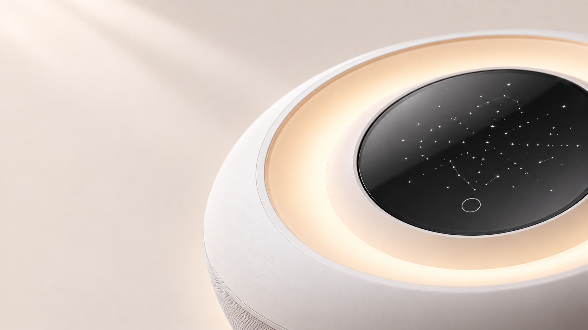
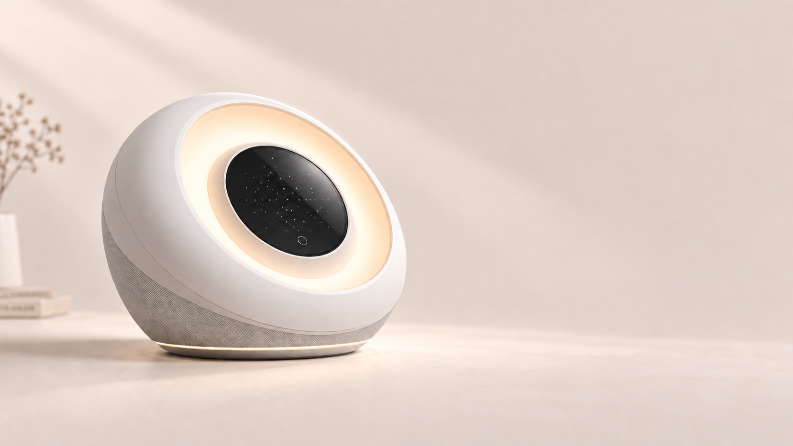
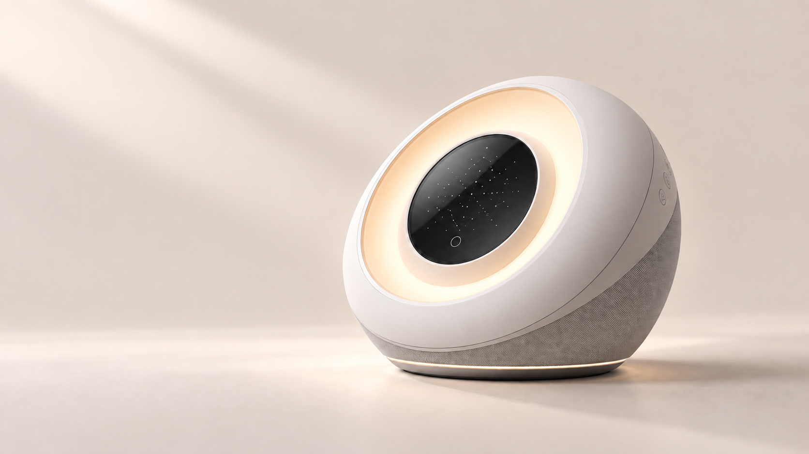
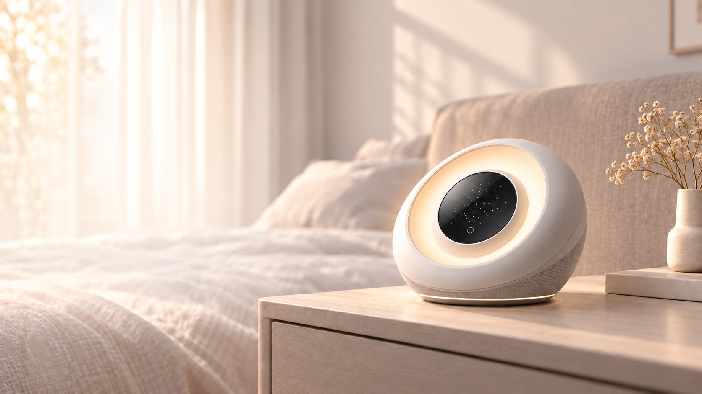
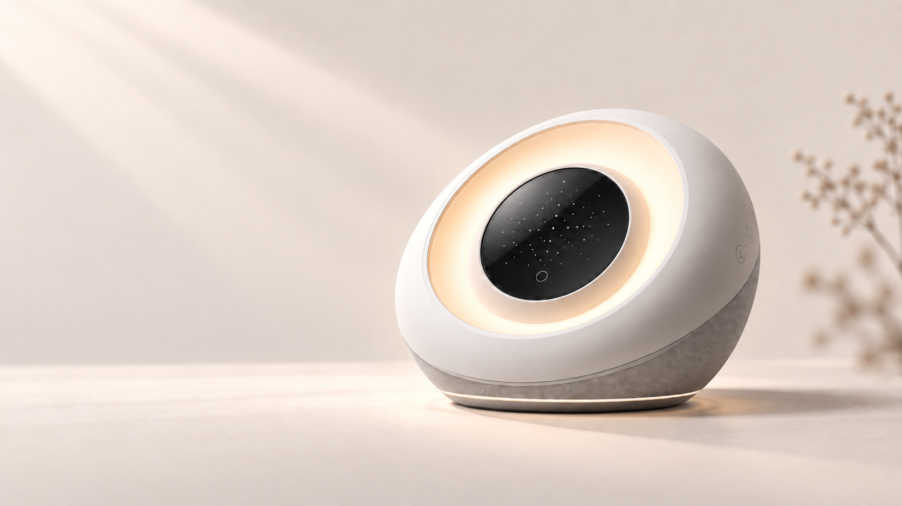

01 / THE GLOWA warm welcome to the day.
Fall into quiet. Wake into warmth. One beautifully simple bedside companion for the moments between night and day.
Discover the feelingThe White Noise Wake Light brings together a calming soundscape and a gentle halo of light. It belongs beside the bed, where winding down and waking up can feel like part of the same thoughtful ritual.
Light, sound, and form work together to make your bedside feel more considered.

White noise creates a steady, soothing backdrop for the hours you want to call your own.
A soft, warm glow brings a more peaceful feeling to your evening and morning routine.

From the luminous ring to the starry display, each visible element is composed to feel gentle, intuitive, and at home on your nightstand.
See it in your space
A CLOSER LOOK / STILLAn inviting glow with a soft visual edge.
A quiet point of focus at the heart of the form.
Soft texture that suits the bedside.
Thoughtfully placed on the sculpted shell.

A quiet presence as you settle in. A warm light to greet you when a new day begins.

Bring a softer rhythm to the space where every day begins.
Back to the beginning